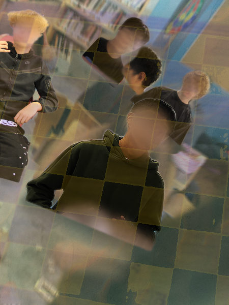
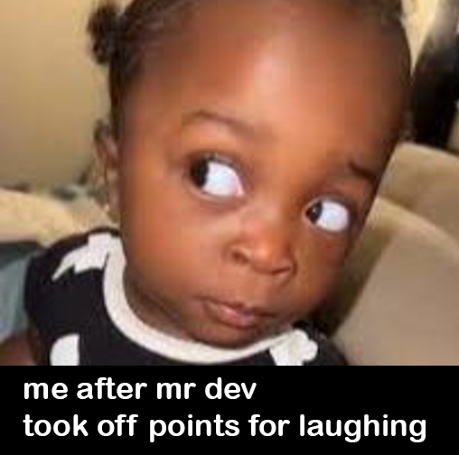
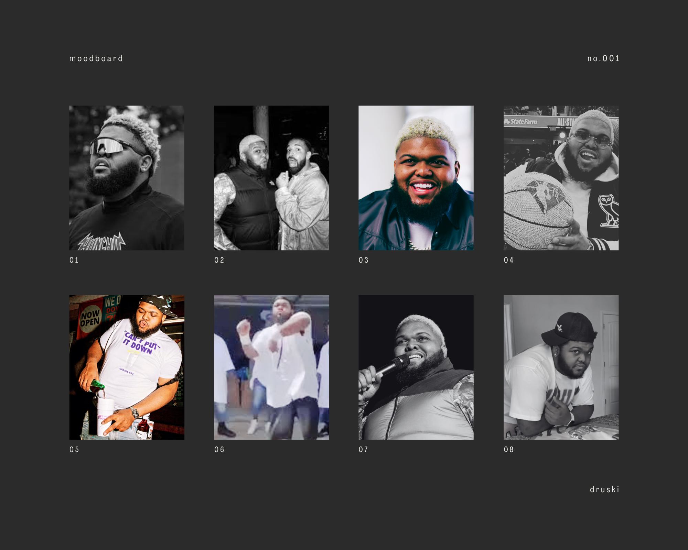
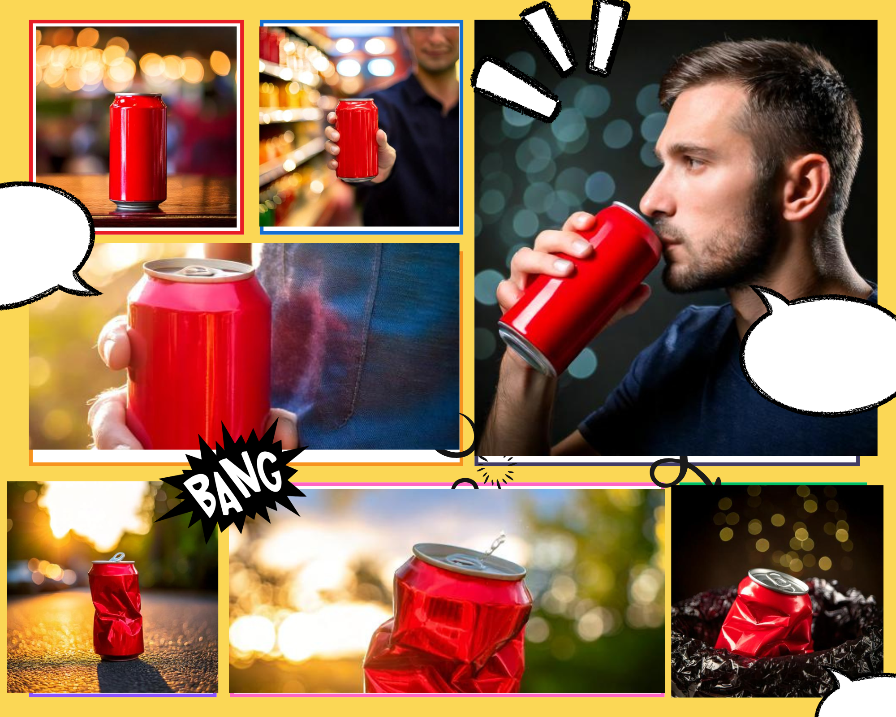

Alphabet Photography

This project explored typography through photography. I captured objects that resembled letters in the alphabet and composed a full alphabet photo collage. It taught me to see the world from a creative lens.
No-Face Self Portrait
This piece represents identity without showing the face. I used symbolic elements and composition to reflect aspects of who I am. It pushed me to tell a story visually without relying on facial expression.
Meme Creation
In this project, I learned how to use humor and visual context to communicate a message. I created memes that were both relevant and engaging, and practiced basic digital editing skills.
Visual Storytelling

This assignment involved telling a narrative using only visuals. I used composition, perspective, and sequence to guide the viewer through a short story using images alone.
Mood Board
I created a mood board to gather inspiration and define the aesthetic direction of a design concept. It included colors, textures, images, and themes that conveyed a specific visual mood.
Scavenger Hunt

This interactive activity challenged me to capture photos that matched certain themes and ideas. It trained my eye to notice visual details and practice quick creative thinking.
AI Art
I experimented with AI art generators to create unique and surreal visuals. This project helped me understand how technology can be used as a creative tool in modern art.
Logo Design
For this assignment, I designed logos using basic design principles such as balance, simplicity, and symbolism. I used digital tools to create clean, professional-looking designs.
Reflection
This year in Digital Media taught me how to express ideas visually and use creative tools to bring concepts to life. I developed technical skills, but more importantly, I learned how to think like an artist and communicate through images. It was a fun and inspiring journey.